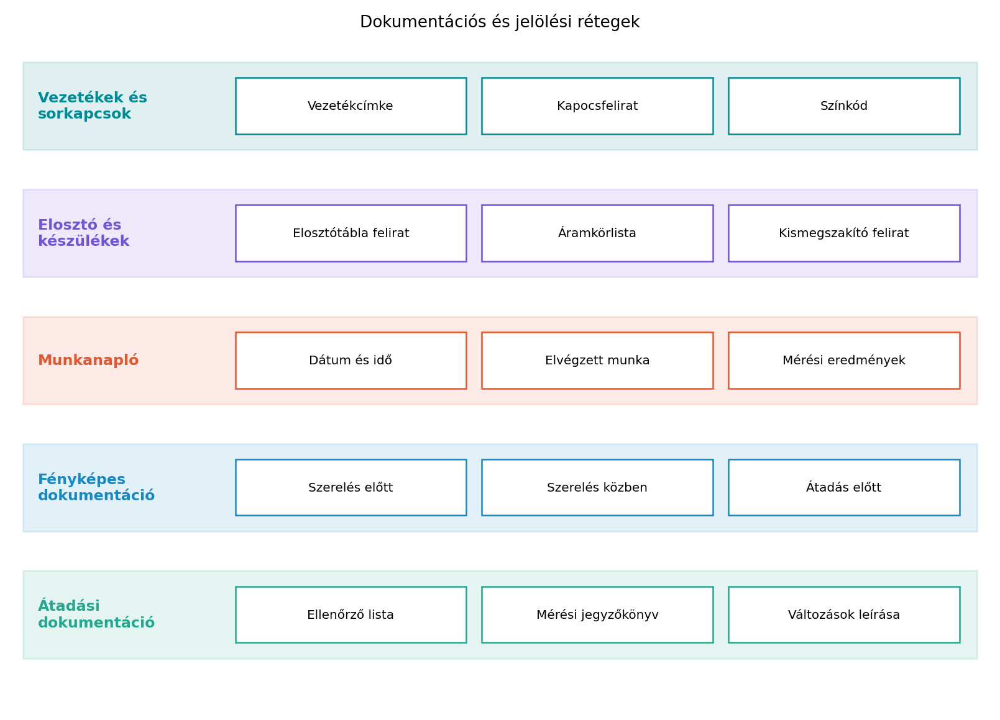

Képzeld el: egy lakáselosztó cseréjét befejeztétek, az áramkörök mind működnek, a megrendelő átvette a munkát. Két hét múlva telefonál: leoldott egy kismegszakító, és nem tudja, melyik áramkörhöz tartozik, mert a villanyszerelő nem tett fel semmilyen feliratot. A szereléskor készült fényképeket sem találják, mert a telefonból törölték őket. A felülvizsgáló pedig nem tudja megállapítani, hogy a fürdőszobai áramkört valóban a 30 mA-es áram-védőkapcsoló védi-e, mert nincs semmilyen dokumentáció.
Ez az alfejezet éppen erről szól: hogyan jelölj meg egyértelműen minden vezetéket és készüléket, hogyan vezess szerelési naplót, és hogyan hagyd hátra a munkahelyet úgy, hogy a következő szerelő, a felülvizsgáló és a megrendelő is el tudjon igazodni rajta. A rendrakás és a dokumentáció nem „plusz munka”: része annak a szakmai minőségnek, amiért téged hívnak vissza, és amiért biztonságos lesz a berendezés.
Továbbvitt eredmény. Az itt megtanult jelölési és dokumentációs elveket közvetlenül alkalmazzuk a Világítási áramkörök építése: egypólusú, váltó, kereszt alfejezetben, ahol a tanműhelyi kapcsolás vezetékeit kapocsazonosítóval és színkóddal kell ellátnod.

A jelölés célja, hogy a rajz, a valóság és a mérés hármasa bármikor összekapcsolható legyen: amit a terven látsz, azt ugyanazzal a jelöléssel találd meg a kapcsolószekrényben, a sorkapcson és a mérési jegyzőkönyvben.
Definíció. A vezetékjelölés
(vezetékcímke) olyan, a vezetékre vagy kábelre felvitt azonosító, amely
a rajz és a valóság közötti egyértelmű kapcsolatot biztosítja. A
kapocsazonosító a sorkapcsok, készülékkapcsok és
csatlakozók jelölése, például X1:5, -K1:A1,
L1.
Szabály. Minden vezeték mindkét végén, kábel esetén pedig a kábel mindkét végén jól olvasható, mechanikai sérülésnek és nedvességnek ellenálló jelölést kell elhelyezni. A jelölést a lehető legrövidebb, de a rajzon megtalálható azonosítóval készítsd. Több vezeték együtt jelölése esetén mindig a színkóddal együtt dolgozz: a jelölés önmagában nem helyettesíti a védővezető zöld-sárga vagy a nulla világoskék színét.
A gyakorlatban a következő jelölési rendet érdemes követni:
F védelmi készülék
(kismegszakító, RCD, olvadóbiztosító, hőkioldó), Q
főkapcsoló, teljesítménymegszakító, K mágneskapcsoló/relé,
H jelzőlámpa (a hagyományos jelölés; az MSZ EN IEC 81346-2
szerint a jelzőlámpa betűjele P, ellenőrizendő: aktuális
kiadás; a könyv rajzain H szerepel), M motor,
T transzformátor, X sorkapocs. Utána arab
szám: Q1, F2, K3,
X1. A rajzon és a készüléken ugyanaz a jel
szerepeljen.A1–A2, főérintkezők
1–2, 3–4,
5–6, segédérintkezők
13–14 (NO), 21–22
(NC). A sorkapcsok jelölési formája például X1:1,
X1:PE.-K1:14
forma azt jelenti: a K1 mágneskapcsoló 14-es kapcsáról induló vezeték; a
-H1:1 pedig a H1 jelzőlámpa 1-es kapcsa. Ez a bekötésnél
egyértelművé teszi, hová tartozik a vezeték.Az alábbi ábra egyetlen vezetéken mutatja meg, hogyan kapcsolja össze
a jelölés a rajzot, a valóságot és a mérést. A K1 mágneskapcsoló 14-es
kapcsától az X1 sorkapocs 5-ös kapcsáig futó vezeték mindkét
végén ugyanaz a jelölés (K1:14–X1:5) van; a
készüléken és a sorkapcson a referenciajel (-K1,
-X1) olvasható; a terv vezetéklistájában és a mérési
jegyzőkönyvben ugyanez az azonosító szerepel.
Ha a vezetéket a kábelcsatornában nem tudod végigkövetni, a két végén lévő azonos jelölés alapján mégis egyértelmű, melyik sor tartozik hozzá a vezetéklistában. A HTML-kiadásban a jelölési rétegek kikapcsolhatók – próbáld ki, mennyire nehéz jelölés nélkül eligazodni.
Szabvány. A jelölések alapelveit az MSZ EN 60445
szabvány foglalja össze (ellenőrizendő: aktuális kiadás és hatókör). Az
izolált vezetők színjelölése Magyarországon: a fázisvezető barna, fekete
vagy szürke, a nulla világoskék, a védővezető zöld-sárga (a pontos
színárnyalatokat és a háromfázisú jelölést az éppen hatályos kiadás
szerint ellenőrizni kell). A referenciajelölés rendszere az MSZ EN IEC
81346 sorozatban szerepel (korábban MSZ EN 61346; ellenőrizendő: a
pontos kiadás). A gyakorlatban a kismegszakítót F-fel és
Q-val is jelölik; egy dokumentáción belül egységesen kell
eljárni. Ebben a könyvben a kismegszakító és az áram-védőkapcsoló (RCD)
jele F, a főkapcsolóé Q.
Gyakorlat. A feliratozás szabályai elosztóknál:
Az alábbi ábra felső része egy ezek szerint feliratozott lakáselosztót mutat: minden készülék fölött referenciajel, névleges adat és áramkörnév, az áram-védőkapcsoló fölött a védett körök csoportja, a főkapcsoló fölött a „FŐKAPCSOLÓ” felirat, az ajtó belső oldalán pedig az áramköri jegyzék. Az alsó rész ugyanazt az elosztót felirat nélkül, filccel javítgatott „konyha?” felirattal mutatja.
A hibás változatnál egy leoldás után a megrendelő nem tudja, melyik kör kapcsolt le, és a felülvizsgáló sem tudja azonosítani az áramköröket. A HTML-kiadásban a két nézet között lehet váltani.
A jelölés készítésekor használhatsz hőre zsugorodó feliratcsövet, kábelnyomtató címkéket, műanyag tasakba csúsztatható feliratkártyát vagy (ha a gyártó engedi) lézernyomtatóval készített, ragasztós, védett címkét. A filccel írt, kézzel javítgatott felirat elfogadható ideiglenes célra, de átadásra nem való.
A leggyakoribb jelölőeszközöket az alábbi tabló hasonlítja össze: (1)
nyomtatott, hőre zsugorodó feliratcső, (2) egyenként felpattintható
jelölőgyűrűk, (3) kábelzászló kötegelővel a kábel mindkét végén, (4)
sorkapocs-jelölőcsík (X1:1 … X1:PE), (5) felirathordozó az
elosztóban, (6) filces felirat – ez utóbbi csak ideiglenes.
A jelölőgyűrűknél a karakterek sorrendjét mindig ugyanabból az irányból (a vezeték vége felől) olvasd, különben a „51” és a „15” összecserélhető. A HTML-kiadásban az eszközökre mutatva megjelenik rövid jellemzésük.
Példa. Egy tanműhelyi világítási áramkörben az
egypólusú kapcsolóhoz tartozó részt így jelöljük: a kapcsoló bekötésekor
a fázisvezetőt L és -S1:1 felirattal látjuk
el, a kapcsolóról a lámpához menő vezetéket -S1:2–„lámpa
fázis” jelöléssel, a nulla vezetéket N felirattal, a
védővezetőt PE felirattal. Ugyanezek a jelölések jelennek
meg a kapcsolási rajzon is. A kötőjeles előtag (-) a
termékszempontú referenciajelölést jelzi (MSZ EN IEC 81346); egyfázisú
körben a fázisvezető jele L (az L1 a
háromfázisú hálózat első fázisa).
Egy rendezetlen munkahely nem csak lassít, hanem baleseti forrás is. A levágott kábelvégek, a hátrahagyott szerszámok, a szétgurult csavarok mind az elbotlás, rövidzárlat, sérülés kockázatát növelik. A rend a szakmai szemlélet része, nem kényelmi kérdés.
Szabály. A munkaterületen a hulladékot azonnal, fajtánként gyűjtsd:
A kábelhulladékot fém és műanyag szerint, a helyi átvevő igénye szerint válogasd; a levágott részeket a kábelvágóval vagy oldalcsípőfogóval darabold rövidebbre, mielőtt a gyűjtőbe kerül.
A szerszámellenőrzés lépései:
A rendrakás rendszere sok helyen az 5S elvét követi: szortírozás, rendszerezés, tisztítás, szabványosítás, fenntartás. Erre épülhet a napi szerelői rutin.
A munkanapló (szerelési napló) a munkavégzés írásos nyoma, amely bizonyítja, mit, mikor, milyen anyagokkal és milyen mérésekkel végeztél. Ha később reklamáció, felülvizsgálat vagy baleseti vizsgálat indul, a napló a leghitelesebb forrás.
Definíció. A szerelési napló olyan dokumentum, amelyben az elvégzett munkát időrendben, tömören, de a későbbi azonosításhoz elegendő részletességgel rögzítjük.
A bejegyzésnek legalább a következő adatokat kell tartalmaznia:
Szabály. A naplót folyamatosan, a munka napján, nem utólag visszaírva kell vezetni. Javító folyadék vagy olvashatatlan áthúzás helyett a hibás sort egyetlen vonallal húzd át úgy, hogy az eredeti olvasható maradjon, és mellé írd a javítás okát, dátumát, aláírását.
A fényképes dokumentáció célja, hogy a szerelés állapotát vizuálisan rögzítsük, különösen olyan helyeken, ahol a későbbi ellenőrzés nehéz (fal előtti vezetékezés, padló alatti kábel, kapocsdoboz belső bekötése). A minimális fényképezési pontok:
A fényképeket egyértelmű fájlnévvel (pl.
2025-03-11_elosztó_csere_előtte_03.jpg) mentsd el, és
másold a projektdokumentáció mappájába, ne csak a telefonon hagyd. A
képek készítésénél figyelj arra, hogy a szükséges hozzájárulást
megkaptad-e, különösen magánterületen, és a képek ne tartalmazzanak
személyes adatot (arc, rendszám), ha nem szükséges.
Az átadás előtti ellenőrzés az a pillanat, amikor a szakember egy utolsó, kritikus szemmel végignézi a munkát, mielőtt a megrendelőnek átadná. Ez nem a mérések pótlása, hanem a jelölés, a tisztaság és a dokumentáció teljességének ellenőrzése.
Eljárás – átadás előtti ellenőrző lista.
Példa. Egy lakáselosztó átadása előtt a szerelő ellenőrzi, hogy az F1 felirat „Nappali világítás déli” olvasható-e, a vezetékeken a jelölés hőre zsugorodó csővel rögzítve van-e, az áram-védőkapcsoló (RCD) tesztgombja működik-e (ha a gyártó előírja), és a naplóban a mérési eredmények dátum szerint szerepelnek-e.
Egy társasházi lakás elosztójának cseréje után a megrendelő reklamált, hogy a konyhai hűtőszekrény leolvadt, mert véletlenül lekapcsolták a kismegszakítóját, de nem tudták, melyik kapcsoló tartozik hozzá. Kiderült, hogy a szerelő nem tett fel feliratokat az elosztóba, és a kábelcímkéket is elhagyta. A fényképes dokumentáció hiányában a későbbi hibakeresés során a villanyszerelő kénytelen volt az egész elosztót átnézni és minden kört külön végigmérni. Utólag a felirat pótlása és a dokumentáció elkészítése több időt vett igénybe, mint amennyit a szerelő a jelölés elhagyásával megtakarított. A tanulság: a jelölés és a dokumentáció nem utólagos papírmunka, hanem a szerelés minőségét és a berendezés biztonságát szolgálja.
Cél. Egy tanműhelyi elosztó vagy áramkör jelölésének, feliratozásának és dokumentálásának elvégzése feszültségmentes állapotban, a későbbi, Világítási áramkörök építése: egypólusú, váltó, kereszt gyakorlathoz szükséges alapok begyakorlása.
Eszközök és anyagok. Kábelcímke nyomtató vagy előre nyomtatott hőre zsugorodó felirat; filctoll; feliratkártyák; sorkapocsfeliratok; fényképezőgép; munkanapló; ellenőrző lista; a kapcsolási rajz.
Biztonsági korlát. A feladat tanműhelyi (törpefeszültségű) környezetre vagy jogosult oktató felügyeletére vonatkozik; hálózati feszültségen önállóan ne végezd. Ha az elosztó már feszültség alatt van, a munkavégzés előtt mindig a jogosult személy végezze el a feszültségmentesítést.
Az öt biztonsági szabály.
A jelölés lépései.
F1, K1, Q1)
úgy, hogy az olvasható legyen.X1:1,
X1:2, X1:PE.F1 – 16 A, C – nappali világítás.Ellenőrzési pontok.
Tipikus hibák a gyakorlatban.
Dokumentálás. A munkanaplóval együtt mentsd el a fényképeket, a módosított rajzokat és az ellenőrző listát.
Hiba 1 – Hiányzó feliratok az elosztóban. A szerelő úgy adja át az elosztót, hogy a kismegszakítók alatt nincs semmilyen felirat, vagy a felirat csak „L1”, „L2”, „L3”. A megrendelő nem tudja, melyik kört kapcsolja le, a felülvizsgáló nem tudja ellenőrizni a védelmet. A helyes gyakorlat: minden megszakító fölé egyértelmű, az áramkör funkcióját leíró felirat kerüljön.
Hiba 2 – Vezetékjelölés elhagyása. A huzalozás kész, de a vezetékeken nincs semmilyen azonosító. Később a sorkapocsnál kell hibát keresni, és nem lehet tudni, melyik vezeték hová megy. A helyes gyakorlat: a szereléssel párhuzamosan, még a huzalozáskor jelöld a vezetéket.
Hiba 3 – A munkanapló üresen marad. A munkát elvégzik, de a naplóba nem írnak semmit. Egy későbbi reklamáció vagy baleset esetén nem bizonyítható, mit és mikor végeztek. A helyes gyakorlat: a napi munka végén azonnal rögzíteni a bejegyzést, dátummal és aláírással.
Hiba 4 – A szerszámokat ellenőrizetlenül teszik el. A sérült szigetelésű csavarhúzót tovább használják, mert „még jó”. Ez áramütéses balesethez vezethet. A helyes gyakorlat: sérült szerszámot azonnal ki kell vonni, jelölni kell, és javítás nélkül nem szabad használni.
1. kérdés. Igaz vagy hamis? A zöld-sárga vezetőt fázisvezetőként is fel lehet használni, ha a végeit barna jelöléssel látjuk el. Indokold!
2. kérdés. Milyen adatokat kell tartalmaznia legalább egy munkanapló-bejegyzésnek? Sorolj fel ötöt!
3. kérdés. Mi a hibás a következő gyakorlatban? A szerelő a kapcsolási rajzot nem jelöli, csak a vezetékekre írja fel a színt: „barna”, „kék”, „zöld”. Miért nem elég ez?
4. kérdés. Melyik hulladékfajta nem keverhető a kommunális hulladékba? Nevezz meg legalább kettőt!
5. kérdés. Átadás előtt mit ellenőrzöl a szerszámokkal kapcsolatban? Sorold fel legalább három pontot!
1. feladat (A). Sorold fel a vezetékjelölés három elemét, és magyarázd el, milyen színű a nulla és a védővezető.
2. feladat (A). Írd fel egy kismegszakító feliratát a következő adatokkal: F1, 16 A, C karakterisztika, nappali világítás. Milyen további adatot tüntetnél fel, ha a megszakító a fürdőszobai kört védi?
3. feladat (B). Készíts jelölési tervet egy egypólusú világítási áramkörhöz (a tipikus kapcsolás a Világítási áramkörök építése: egypólusú, váltó, kereszt alfejezetben): L, N, PE, kapcsoló, lámpa. Add meg a vezetékek és a kapcsok jelölését!
4. feladat (B). Tervezd meg a munkanapló bejegyzését egy napra, amikor a tanműhelyben a Világítási áramkörök építése: egypólusú, váltó, kereszt alfejezet kapcsolását építettétek meg. Tartalmazza a dátumot, a munkát, az anyagokat, a méréseket, az eltérést és az aláírást!
5. feladat (C). Elemezd, miért hibás az a gyakorlat, hogy a fényképes dokumentációt csak az átadás napján készítik el, miután a falat már bevakolták és lefestették. Milyen következményei lehetnek?
6. feladat (D). Adott egy elosztó fényképe, ahol a kismegszakítók alatt nincs felirat, a vezetékek jelölése hiányzik. Írd le, milyen lépésekkel pótolnád a jelölést feszültségmentes állapotban, a tanműhelyi gyakorlat során. Milyen ellenőrzést végeznél a végén?
Önellenőrzés – válaszok.
L,
-S1:1.1. feladat (A). A vezetékjelölés három eleme: (1) a
színkód, (2) a vezetékazonosító (pl. szám, cél), (3) a kapocsazonosító
(pl. -K1:14). Nulla: világoskék; védővezető:
zöld-sárga.
2. feladat (A). „F1 – 16 A, C – nappali világítás”. Ha a fürdőszobai kört védi: „F1 – 16 A, C – fürdőszoba”, és mellé kötelezően a védő áram-védőkapcsoló: „RCD F4, ”. A fürdőszobai áramköröket 30 mA-es RCD-vel kell védeni (ellenőrizendő: MSZ HD 60364-7-701 és az aktuális hazai előírás), ezért a feliratnak és az áramkörlistának egyértelműen meg kell mutatnia, melyik RCD alatt van a kör. A leoldási jelleggörbe és a védőkapcsoló jelölése is szerepeljen.
3. feladat (B). Egypólusú kapcsolás (lásd a Világítási áramkörök építése: egypólusú, váltó,
kereszt). A fázisvezető belép: L – elosztótól a
kapcsoló 1 kapcsáig; a kapcsoló 2 kapcsáról a
lámpa fázis csatlakozója (jele: -S1:2 – lámpa L); a nulla:
N – elosztótól a lámpa N csatlakozója; a
védővezető: PE – elosztótól a lámpa fém testéig. A
jelölésben a -S1:1 és -S1:2 utal a
kapcsolóra.
4. feladat (B). Minta bejegyzés: „2025. 03. 11. 14:00–16:00, Tanműhely 2. terem. Vezetékjelölés gyakorlása az egypólusú világítási kapcsoláshoz. Felhasznált anyagok: H07V-U 1,5 mm² (barna, kék, zöld-sárga) 3×2 m; egypólusú kapcsoló S1; fényforrás izzó. Mérések: vezetékfolytonosság: 0,3 Ω (saját mérőzsinór 0,2 Ω). Eltérés: a kapcsoló felirat nyomtatása késett, ideiglenes kézi felirat készült. Aláírás: …”
5. feladat (C). Az utólagos, csak átadáskor készített fényképek nem dokumentálják a rejtett szerelés állapotát (fal előtti kábelek, kötések, dobozok). Ha később hiba lép fel, nem lehet bizonyítani, hogy a nyomvonal és a szerelés szabályos volt. A következmény: a hibakeresés lassabb, a felelősség nehezen tisztázható, a garanciavállalás vitatott lehet. Helyes: a fényképeket a munkafázisok közben folyamatosan készíteni.
6. feladat (D). A jelölés pótlása feszültségmentes állapotban:
F1 – 16 A, C – nappali világítás).X1:1,
X1:2, X1:PE.A jelölés, a feliratozás és a dokumentáció a villanyszerelő munka
minőségének alapja. A vezetékeket egyértelmű azonosítóval látjuk el,
amely a kapcsolási rajzra mutat vissza; a készülékek referenciajelölést
kapnak (Q1, K1, F1), a kapcsok
szabványos jelölést (A1, 13,
X1:5). Az elosztóban minden megszakító fölé felirat kerül,
az áramkör funkciójával. A munkaterületen a rend és tisztaság, a
hulladék fajtánkénti gyűjtése és a szerszámellenőrzés a
balesetmegelőzést és a szakszerűséget szolgálja. A munkanaplót
folyamatosan, aláírással és dátummal vezetjük; a fényképes dokumentáció
a rejtett munkák bizonyítéka. Az átadás előtt ellenőrző lista alapján
meggyőződünk a jelölések, a dokumentumok és a mérési jegyzőkönyvek
teljességéről. Továbbvitt eredmény. A Világítási áramkörök építése: egypólusú, váltó,
kereszt gyakorlatban ezt a jelölési rendet alkalmazzuk: a
kapocsjelölések és vezetékazonosítók nélkül a hibakeresés és a mérés sem
végezhető el egyértelműen.
Az alfejezetben alkalmazott jelölési alapelvek (színkódok, kapocsjelölések, referenciajelölés) a magyar/európai szabványrendszerben aktuálisan érvényesek, de a pontos szabványszám és kiadás tekintetében ellenőrzendő: MSZ EN 60445, MSZ EN IEC 81346 (korábban MSZ EN 61346), MSZ HD 60364 sorozat vonatkozó kötetei, különösen a színjelölésre és a személyi védelemre vonatkozó részek. A gyakorlati útmutatóban megadott mérési mintahatárok és a naplóbejegyzés formai követelményei tanulási példák; a konkrét határértékeket és dokumentumformátumokat a hatályos szabványok és a projekt előírásai szerint kell ellenőrizni.